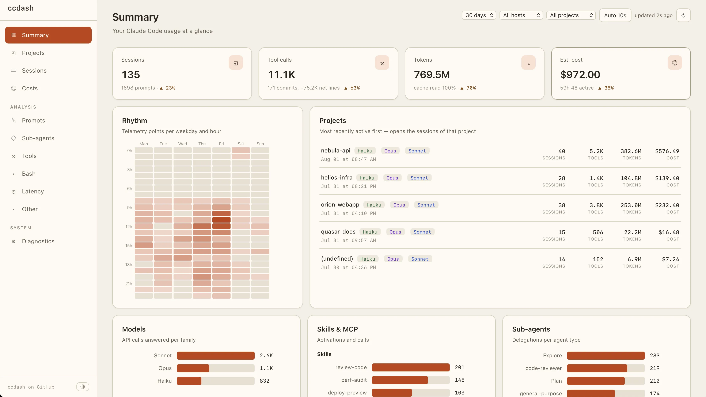
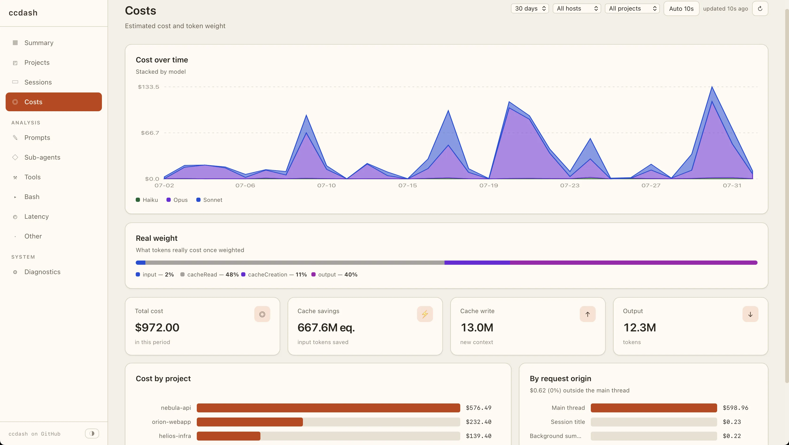
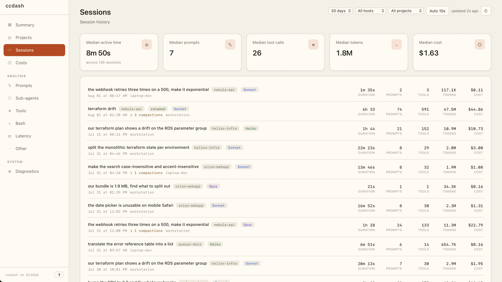
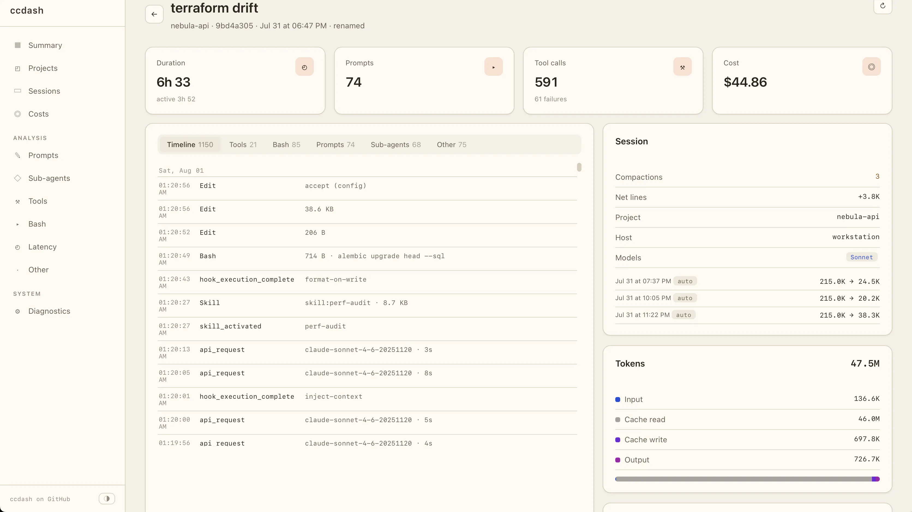
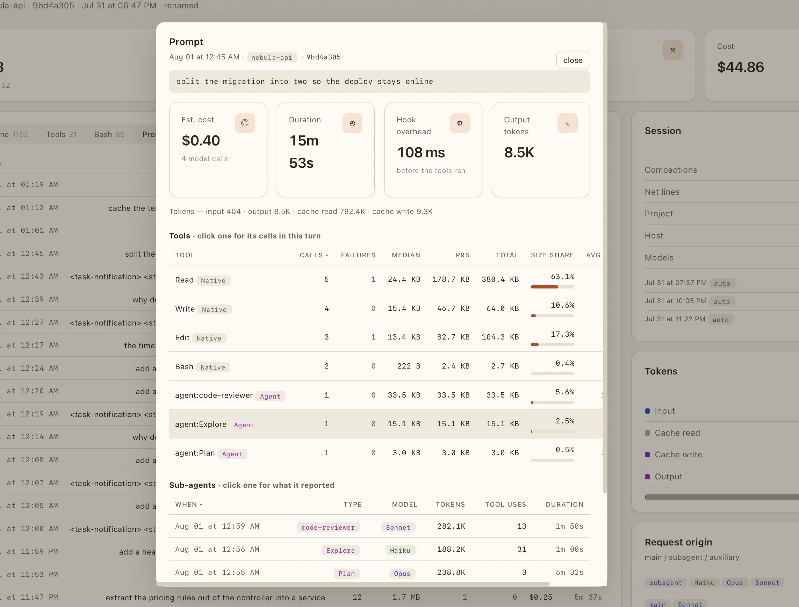
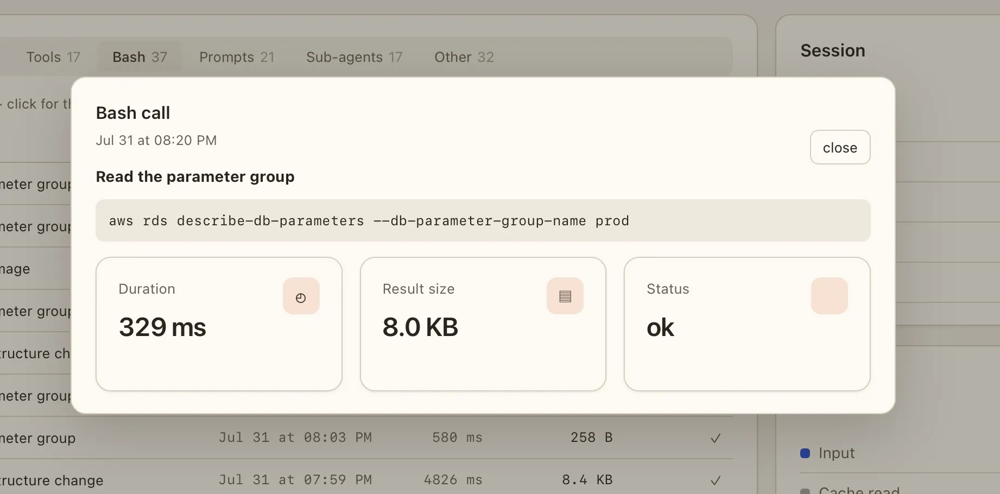

OTLP receiver + dashboard open source · MIT
Claude Code telemetry, on your own machine.
Claude Code already measures itself and can export it as OpenTelemetry. ccdash receives it locally, keeps it in a SQLite file you can query yourself, and shows what your sessions actually do: which tools fail, what gets delegated, where the latency and the tokens go.
No dependency, nothing to install, no outbound call.

Everything stays on your side
A session burns tokens, delegates to sub-agents, compacts its context and fires hundreds of tool calls. None of it is visible, and none of it needs to leave your machine to be measured.
Zero dependency
One Python file and a handful of static assets, standard library only. No pip, no
requirements.txt, nothing to install. Python 3 or Docker, nothing else.
Local by construction
The server only receives and serves — it makes no outbound call. Identifying
attributes (email, user id, organization id) are dropped on ingestion, and only
http/json is accepted.
Storage you can read
Everything lands in a single SQLite database. Point sqlite3 at
ccdash.db and run whatever query the dashboard does not answer.
Per-project attribution
OpenTelemetry does not expose the working directory. One
OTEL_RESOURCE_ATTRIBUTES line per repository and every figure breaks
down by project and by machine.
Drillable to the raw event
Any tool call, delegation or API request opens on what was actually run, how long it took, how much output it returned, and the raw attributes behind it.
Tells you what is missing
Diagnostics reports what was accepted or skipped, which metrics and events arrived, what your hooks cost in latency, and which env flags still gate a view.
See ccdash in action
Eight views over one SQLite file, each at its own address: what ran, what failed, what was delegated, how long it took and what it drew in tokens. Every one of them filters by time window, machine and project, and every row opens on the call behind it.

Where the tokens go
How many tokens the cache saved you, how many went into writing it, and how the whole thing moves over time per model. The weighted bar shows what those tokens really weigh — a cache read counts a tenth of a fresh input token, an output token five — and the last two blocks break it down per project and per request origin: main thread, autocomplete, background summaries, session titles.

Every session, and the median one
Median active time, prompts, tool calls, tokens and cost over the period, then one
row per session: its title, project, model families, duration and its own figures.
Sessions that arrive without resource attributes land under
(undefined).

The whole event stream of a run
Not the conversation — the runtime. Every API request with its model and round-trip, every tool call with what it returned, every hook fire with its overhead, every skill activation, delegation and compaction, timestamped in order. The same events regroup by tool, by file changed, by command, by prompt or by delegation, next to the token split and the share of the run that happened off the main loop.

What one prompt set off
One turn, unfolded: how long it ran and how much of that was hook overhead, every tool it triggered with its call count, failures, median and p95 and the share of output it returned, and the sub-agents it spawned with their model, tokens and duration.

Down to the exact call
Open any row and you get what was really run: the Bash command itself, its wall-clock duration, the volume of output it returned and whether it succeeded. Same for skills, MCP servers and sub-agent instructions.
Quick start
Run the server, point Claude Code at it, and optionally name your projects. Restart a
session afterwards: the first points land within a minute. ccdash reads the telemetry
stream and never opens ~/.claude, so nothing is reconstructed from your
transcripts — the dashboard starts filling from the first session you run after enabling
telemetry, and what came before stays invisible to it.
It has no authentication of any kind — no login, no token, no access control. Anyone
who can reach the port can read your prompts, your commands and your whole session
history. It listens on 127.0.0.1 by default and that default is
deliberate: never expose it on a public server or on a network interface you do not
control.
01Run the server
Docker (recommended). Download the compose file and start it — it pulls the published image, no build from source:
curl -O https://raw.githubusercontent.com/dumontchristophe/ccdash/main/compose.yml
docker compose up -d
Dashboard and OTLP endpoint share one port:
http://127.0.0.1:4318/, health check on /health.
02Connect Claude Code
In ~/.claude/settings.json. The endpoint below points at
127.0.0.1 — ccdash on the same machine.
{
"env": {
"CLAUDE_CODE_ENABLE_TELEMETRY": "1",
"OTEL_METRICS_EXPORTER": "otlp",
"OTEL_METRICS_INCLUDE_ACCOUNT_UUID": "false",
"OTEL_EXPORTER_OTLP_PROTOCOL": "http/json",
"OTEL_EXPORTER_OTLP_ENDPOINT": "http://127.0.0.1:4318",
"OTEL_EXPORTER_OTLP_METRICS_TEMPORALITY_PREFERENCE": "delta",
"OTEL_LOGS_EXPORTER": "otlp",
"OTEL_LOG_TOOL_DETAILS": "1",
"OTEL_LOG_USER_PROMPTS": "0",
"OTEL_LOG_ASSISTANT_RESPONSES": "0",
"OTEL_RESOURCE_ATTRIBUTES": "host=my-host"
}
}
host=my-host here names the machine. Per-repository attribution
(project) goes in that repo's own .claude/settings.json, below.
03Name your projects
Optional, but it is what turns one flat stream into a per-repository breakdown. In
the observed repository's .claude/settings.json:
{
"env": {
"OTEL_RESOURCE_ATTRIBUTES": "host=my-host,project=my-project"
}
}
The keys are exactly host and project; anything else falls
into (undefined).
-
OTEL_LOG_TOOL_DETAILS=1— without it, Bash commands, sub-agent types and MCP server names never leave Claude Code, and those views stay empty. -
OTEL_LOG_USER_PROMPTS—0above. Set it to1to name sessions after their first prompt and keep prompt text; the content is then stored in clear inccdash.db. -
deltatemporality — metrics exported cumulatively cannot be summed over a time window, so several figures would read wrong.
FAQ
Does any of my data leave the machine?
No. The server is Python standard library with no outbound call, and the page fetches nothing from a CDN. Everything stays in one SQLite file on your disk.
Does it show my past sessions?
No — it is not retroactive. ccdash reads the live OTEL stream and never opens
~/.claude, so the dashboard fills from the first session you run after
enabling telemetry.
Where is my data, and in what form?
A single SQLite file, ccdash.db. With the prompt and response log flags
on, prompt text and shell commands are stored in clear — point sqlite3
at it and read them.
What are the logging options?
Three env flags decide what the dashboard can show:
-
OTEL_LOG_TOOL_DETAILS=1— Bash commands, sub-agent types and MCP server names; without it those views stay empty. -
OTEL_LOG_USER_PROMPTS=1— names sessions after their first prompt and keeps prompt text. -
OTEL_LOG_ASSISTANT_RESPONSES=1— adds each assistant response to the timeline.
The last two store that text in clear in ccdash.db — leave them at
0 to keep none of it.
How do I split usage by machine and project?
OTEL_RESOURCE_ATTRIBUTES carries host (the machine) and
project. Set host globally in
~/.claude/settings.json so every session is tagged. Then, in a
repository's own .claude/settings.json, set host and
project together: Claude Code replaces this variable per scope instead
of merging it, so a repo that set only project would drop the
host.
How do I update?
docker compose pull && docker compose up -d.